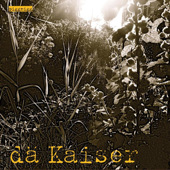

2010
dä Kaiser
Wir sind Kaiser. Ihr auch. Ein Volk von Kaisern. Und oben drauf ein paar Armleuchter.
Besetzung
Wolfgang Egli: Gesang, Gitarren, Hammond, Hohner Orgel
Daniel Weniger: Bass, Gesang
Michael Duss: Gitarre
Alexander Egli: Schlagzeug
Josua Weniger: Saxophon
Lars Walder: Trompete
Wolfgang Egli: Gesang, Gitarren, Hammond, Hohner Orgel
Daniel Weniger: Bass, Gesang
Michael Duss: Gitarre
Alexander Egli: Schlagzeug
Josua Weniger: Saxophon
Lars Walder: Trompete
Titelliste
- Nachtflug
- Öppis Guets
- 13 Stund
- Min Garte
- Amateur
- So Lüt Wie Di
- Dä Ruedi G
- Min Schatz
- Indianer
- Siebezwerg
- Luftibus
- Hey Mäx
Texte
Die ursprünglichen Songtexte sind in den Originaldaten der Albumseite enthalten.